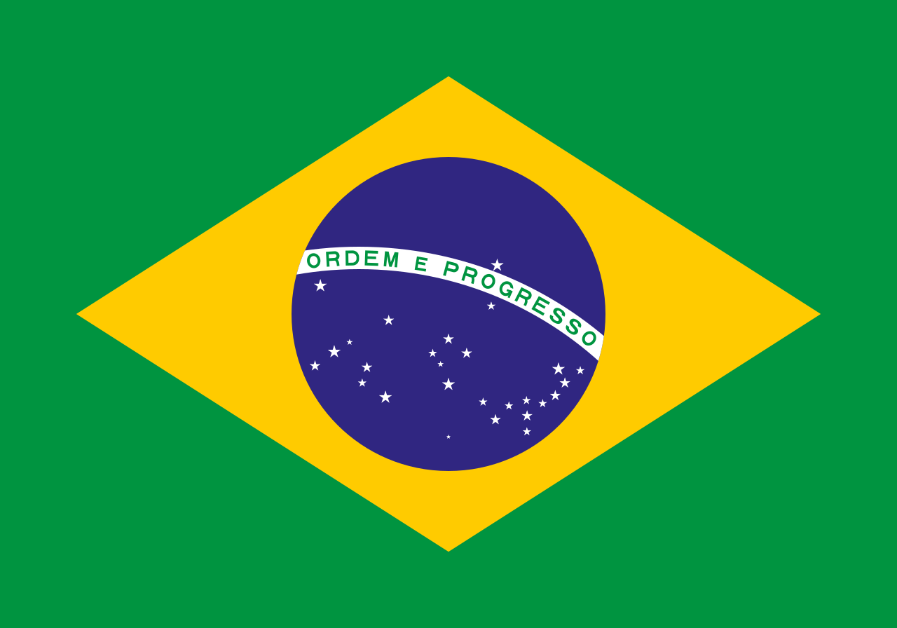

A Copa do Mundo de Futebol é o maior evento esportivo do planeta, organizado pela FIFA. Ela reúne as melhores seleções nacionais de todos os continentes para disputar o troféu mais cobiçado do esporte. O torneio acontece de quatro em quatro anos, mobilizando bilhões de torcedores ao redor do globo em uma grande celebração de união e competitividade.
| País | Continente | Títulos |
|---|---|---|
| Brasil | América do Sul | 4 |
| Argentina | América do Sul | 3 |
| França | Europa | 2 |
| Alemanha | Europa | 4 |



Brasil: Além do futebol, o país é globalmente celebrado pelo Carnaval e pelo Samba, expressões que fundem raízes africanas e europeias em uma explosão de ritmo e cores.
Argentina: Berço do Tango, a Argentina respira uma melancolia elegante em suas danças e possui uma riquíssima tradição literária e cinematográfica reconhecida mundialmente.
França: Referência absoluta em sofisticação, a França moldou a história da arte e da moda, abrigando o Museu do Louvre e preservando um estilo de vida que valoriza a filosofia e a gastronomia.
Alemanha: O país equilibra tradição e inovação, sendo famoso pela icônica Oktoberfest e por uma história musical que vai dos grandes compositores clássicos à vanguarda eletrônica.